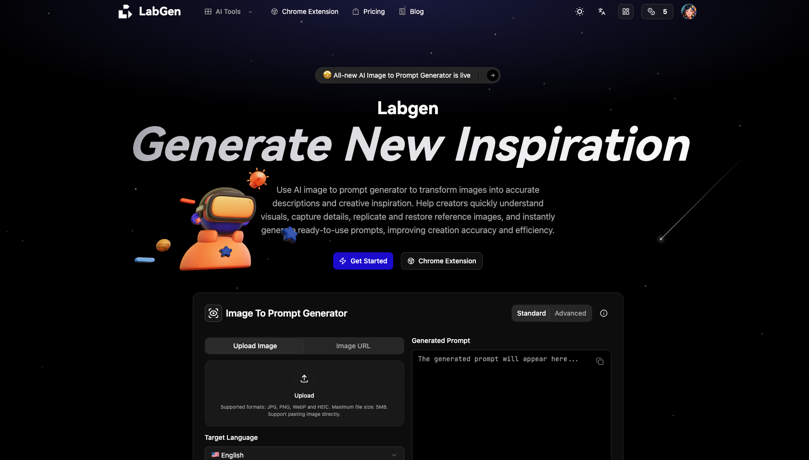

Labgen
Turn AI images into reusable prompts.
Labgen is a practical image-to-prompt tool that helps creators, designers, and AI artists reverse-engineer prompts from images instead of guessing from scratch.
Why Labgen?
If you use Midjourney, Nano Banana, Seedream, or other AI image models, you’ve probably experienced this:
- You see an amazing AI-generated image
- You save it for inspiration
- But you have no idea how the prompt was written
Prompting is a learnable skill — but guessing prompts is not how people actually learn.
The fastest way to learn prompts is to reverse-engineer real images.
What Labgen Does
Labgen analyzes an image and generates a structured, reusable prompt that you can:
- Study to understand prompt structure
- Reuse as a starting point
- Modify and iterate for your own creations
It focuses on clarity and usefulness, not generic descriptions.
Core Features
-
🖼️ Image → Prompt
Upload an image and get a detailed prompt -
🎯 Optimized for Modern AI Image Models
Works well with Midjourney, Nano Banana, Seedream, and similar tools -
⚡ Fast & Simple
No login required, clean and minimal interface -
🧠 Learning-Oriented
Designed to help you understand why prompts work
Chrome Extension
Labgen also provides a Chrome extension for a smoother workflow.
With the extension, you can:
- Right-click any image while browsing
- Send it directly to Labgen
- Generate prompts without leaving the page
This makes it easy to study AI images from:
- Twitter (X)
- ArtStation
- Discord
- Any website
More Than One Tool
While image-to-prompt is the core feature, Labgen is evolving into a small collection of focused AI tools for creators.
Each tool follows the same principles:
- One clear purpose
- Minimal UI
- Practical workflows
- No unnecessary complexity
Labgen is not trying to be an “everything AI platform” — it’s a growing toolbox built for real use.
Who Is This For?
Labgen is useful if you are:
- Learning AI image generation
- Studying prompt structures
- Using models like Midjourney, Nano Banana, or Seedream
- Trying to recreate styles consistently
- Iterating on visual ideas faster
You don’t need to be an expert — beginners often benefit the most.
How to Use
- Find an AI-generated image you like
- Go to https://labgen.ai
- Upload the image (or use the Chrome extension)
- Review the generated prompt
- Reuse or refine it in your favorite model
Philosophy
Prompting is not magic.
It’s closer to:
- Design systems
- Writing frameworks
- Photographic composition
Labgen exists to make prompt structure visible and understandable.